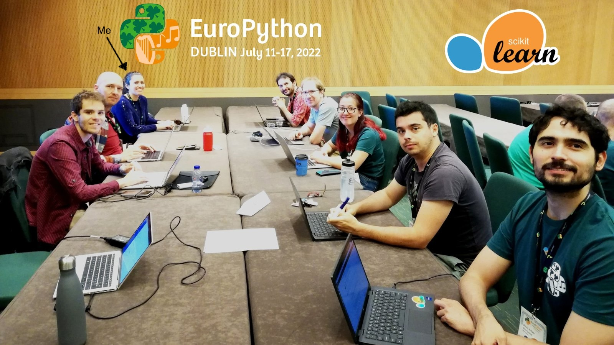

Getting Started with Open Source Contributions
Stefanie Molin
Bio
- 👩🏻💻 Software engineer at Bloomberg in NYC
- 🚀 Core developer of numpydoc
- ✍ Author of "Hands-On Data Analysis with Pandas"
- 🎓 BS in operations research from Columbia University
- 🎓 MS in computer science (ML specialization) from Georgia Tech
Agenda
- Open source contribution myths
- Finding a project to work on
- Identifying a way to contribute
- Making your contribution
- Q&A
Let's dispel some myths.
Myth #1
Only professional developers or maintainers can contribute to open source projects.
Myth #2
Only experts can contribute something meaningful.
Find a project to work on
Brainstorm potential projects
Make a list of the projects you frequently use now or have used in the past.
1.
2.
3.
4.
5.
Evaluate potential projects for suitability
1. Software license
2. Recent activity
3. Codebase size
4. Tech stack
5. Repository access
Identify a way to contribute
#1. Participate in sprints


Source:
tweet from François Goupil
Tips💡
- Pick a project that interests you.
- Look for beginner-friendly projects.
- Ask the maintainers for support as needed.
- Go in with an open mind.
#2. Contribute examples to the documentation
 Screenshot of
NumPy's Polynomial.degree() documentation page
with contributed examples. (Source: Stefanie Molin)
Screenshot of
NumPy's Polynomial.degree() documentation page
with contributed examples. (Source: Stefanie Molin)
Tips💡
- Every project needs good documentation.
- Writing good documentation can be time-intensive.
- Contributing examples helps you learn about the functionality.
- Examples also help others learn.
#3. Browse open issues for ideas
 Screenshot of
open issues tagged "good first issue" in the scikit-learn
repository
as of July 24, 2023 11:44AM. (Source: Stefanie Molin)
Screenshot of
open issues tagged "good first issue" in the scikit-learn
repository
as of July 24, 2023 11:44AM. (Source: Stefanie Molin)
Tips💡
- Look for tags such as beginner, easy, or good first issue.
- Don't disregard old issues, but make sure to check those changes are still desired.
- Search for meta-issues.
- Make sure to indicate that you are working on something by commenting on the issue.
#4. Identify and fix a bug
 Screenshot of
Bug Report issue template for the pandas GitHub repository
as of July 24, 2023 11:52AM. (Source: Stefanie Molin)
Screenshot of
Bug Report issue template for the pandas GitHub repository
as of July 24, 2023 11:52AM. (Source: Stefanie Molin)
Tips💡
- Check if the bug has already been reported or fixed.
- Put in a detailed, reproducible bug report.
- Volunteer to fix the bug after the maintainers triage it.
- Feel free to ask the maintainers for guidance.
#5. Propose and implement a new feature
 Screenshot of
issue #450 in the numpydoc GitHub repository, which proposes incorporating a pre-commit hook for numpydoc
validation. (Source: Stefanie Molin)
Screenshot of
issue #450 in the numpydoc GitHub repository, which proposes incorporating a pre-commit hook for numpydoc
validation. (Source: Stefanie Molin)
Tips💡
- Check if the feature has already been requested.
- Share your idea with the maintainers, detailing what you would like to be able to do or change.
- Volunteer to work on the new feature after the maintainers evaluate it.
- Don't take things personally.
No contribution is too small.
Making your contribution
Tips for success ✨
- Let the maintainers (and the world) know what you are working on.
- Follow any setup instructions the project provides.
- New to development? Start with documentation-based contributions, while you get comfortable working with tools like Git and GitHub.
- If you can, attend a sprint or perhaps a local meetup for your preferred programming language.
- Be polite and patient in all interactions.
Keep up the momentum 💪
- Look for knowledge-sharing opportunities across projects.
- Help others contribute.
- Know that your dedication will not go unnoticed.
Thank you!
I hope you enjoyed the talk. You can follow my work on the following platforms: